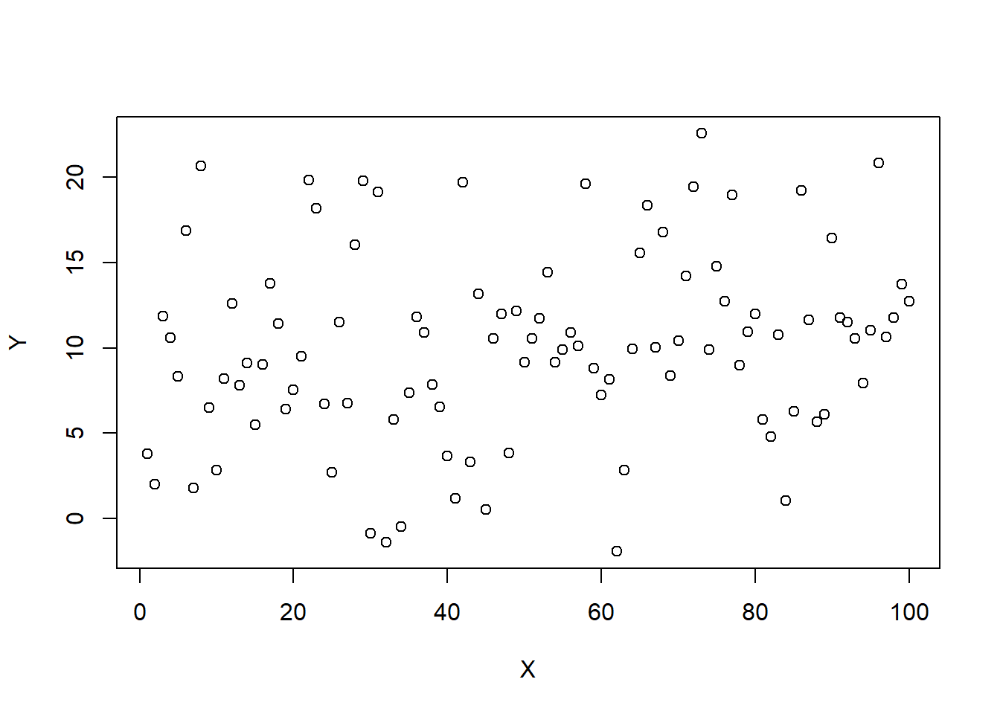
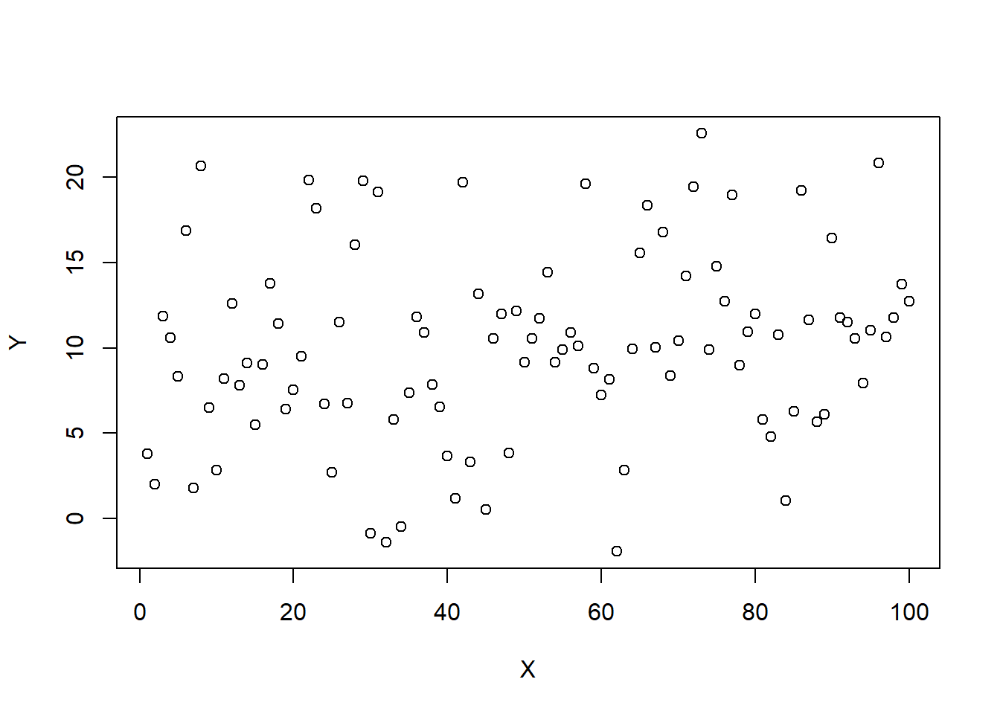
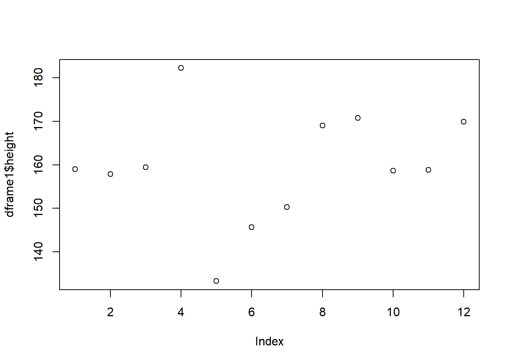
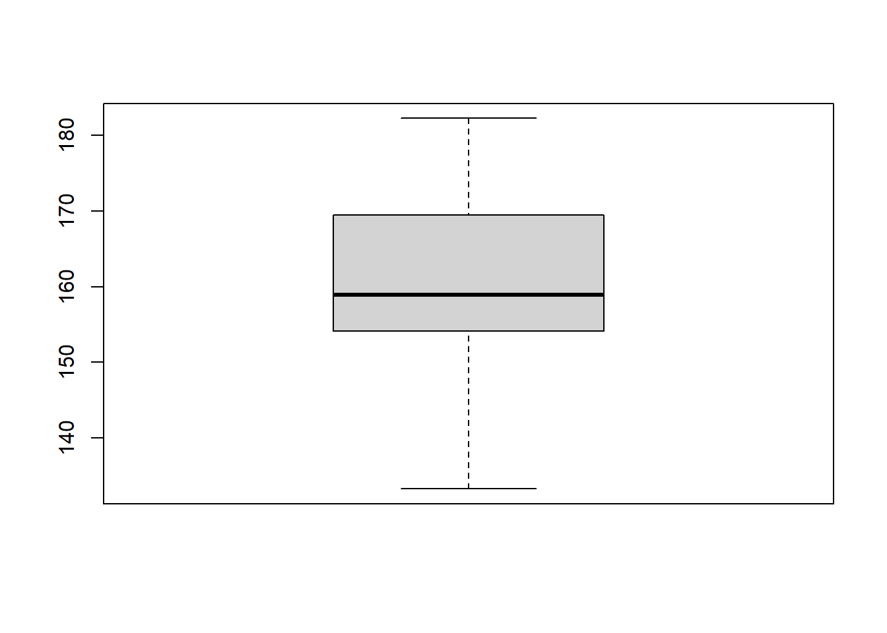
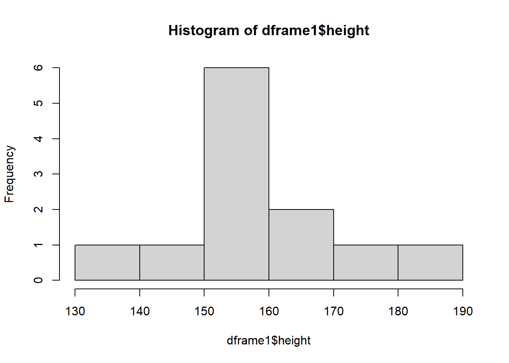
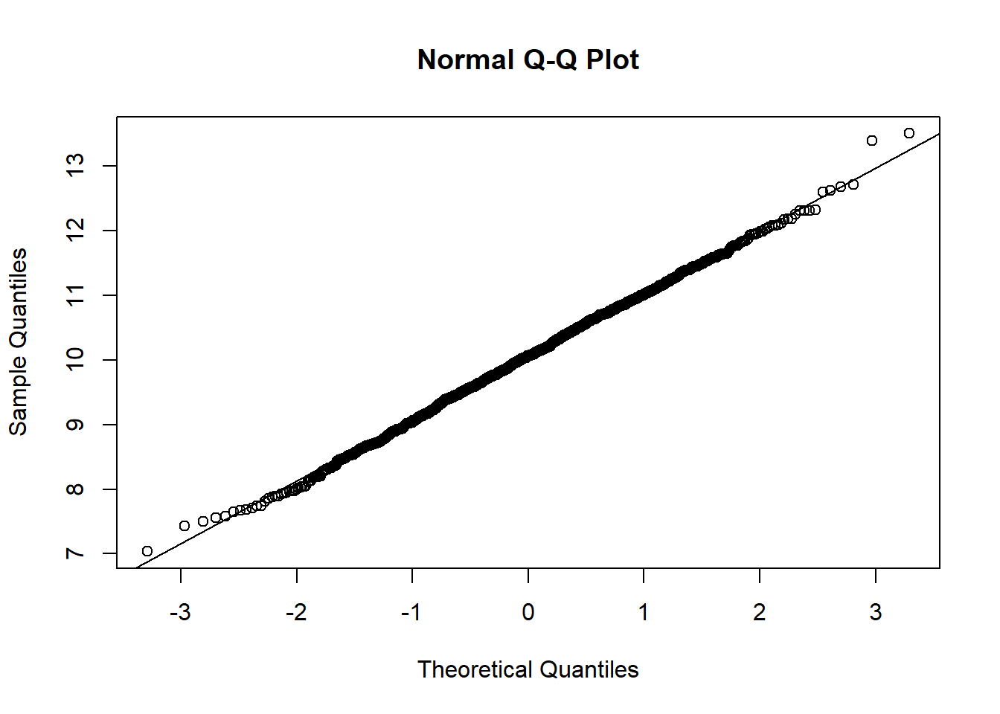
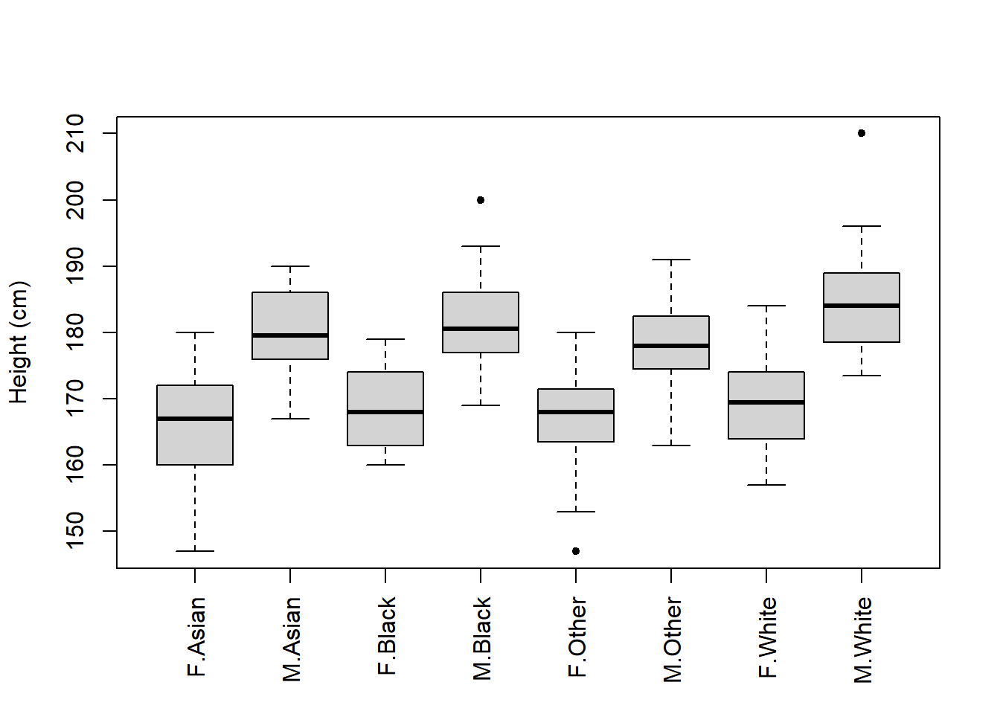
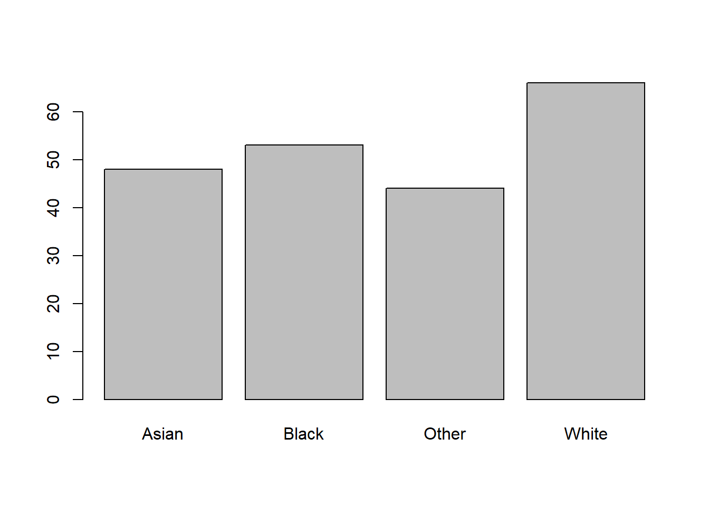

X <- seq(1, 100, 1)
Y <- rnorm(100, 10, 5)
plot(Y ~ X)
Using numeric and visual descriptives
Here’s what you should know and be able to do after completing this practical:
LO1: Create a basic plot using plot()
LO2: Create a dataframe
LO3: Explore a dataframe
LO4: Create boxplots, q-q plots, histograms, and scatterplots
LO5: Subset data using subset() and indexing []
LO6: Calculate some basic descriptive statistics
LO7: Import data into R
LO8: Remove objects from the R Environment
R can be used to plot data
Let’s create some objects and plot them against each other:
X <- seq(1, 100, 1)
Y <- rnorm(100, 10, 5)
plot(Y ~ X)
NOTE: Here we use a new function; the plot() function
We have also used a new symbol ~
This symbol is called “tilde”
Whenever you see it, think of the phrase “as a function of”
Hence here we are plotting Y as a function of X
Next, we are going to create some objects, and then combine them in a dataframe
NOTE: In R, a dataset is called a “dataframe”
ID <- c("A","B","C","D","E","F","G","H","I","J","K","L")
height <- rnorm(12, 160, 12)
weight <- rnorm(12, 70, 10)
gender <- rep(c("male","female","non-binary"), each = 4)If you don’t recognise any of the code or functions above, look back at the Practical 1 - Basics of R script.
We can now combine these objects into a dataframe, which we will call dframe1:
dframe1 <- data.frame(ID, height, weight, gender)This dataset contains the heights and weights of 12 different people. These people are coded with anonymous identification letters. The heights and weights are randomly simulated.
We can now use some simple functions to explore the dataset:
We can use the names() function to see what the column names are:
names(dframe1)[1] "ID" "height" "weight" "gender"Use head() to view the first few rows:
head(dframe1) ID height weight gender
1 A 158.9723 74.42155 male
2 B 157.8801 85.12134 male
3 C 159.4477 64.16854 male
4 D 182.2614 61.02877 male
5 E 133.2562 60.37246 female
6 F 145.7029 61.04565 femaleUse tail() to view the last few rows:
tail(dframe1) ID height weight gender
7 G 150.3080 83.96804 female
8 H 169.0553 59.57936 female
9 I 170.7844 106.12259 non-binary
10 J 158.6810 73.82158 non-binary
11 K 158.8572 88.52473 non-binary
12 L 169.9087 53.24868 non-binaryIf you want to look at the whole dataset, like you would see it in a spreadsheet, you can use View()
NOTE: This will open in a new tab next to your script. You need to click on the “x” to close it.
View(dframe1)Examine the structure of the dataset using str(). Remember that we looked at this function in the previous script, as applied to a single variable. Here we are applying it to a dataset:
str(dframe1)'data.frame': 12 obs. of 4 variables:
$ ID : chr "A" "B" "C" "D" ...
$ height: num 159 158 159 182 133 ...
$ weight: num 74.4 85.1 64.2 61 60.4 ...
$ gender: chr "male" "male" "male" "male" ...We can see that these data contain two character variables, and two numeric variables. If we wanted to change a character variable to a factor, we could do it like this:
dframe1$gender <- as.factor(dframe1$gender)You will have noticed that we used the dollar symbol $ to specifically choose the gender column from the dframe1 dataset.
Then we can use the summary() function, which shows us some basic descriptive statistics or other information from the variables in the dataset.
summary(dframe1) ID height weight gender
Length:12 Min. :133.3 Min. : 53.25 female :4
Class :character 1st Qu.:156.0 1st Qu.: 60.86 male :4
Mode :character Median :158.9 Median : 69.00 non-binary:4
Mean :159.6 Mean : 72.62
3rd Qu.:169.3 3rd Qu.: 84.26
Max. :182.3 Max. :106.12 Let’s now have a go at plotting some of the data from dframe1.
Let’s start by plotting the height using plot()
NOTE: If we want to plot a single variable from the dataset, we use the dollar symbol $ to specify. plot() will just shows us the values of the variable on the y-axis, with the “index” (the observation number) on the x-axis:
plot(dframe1$height)
We can plot a boxplot() as follows:
boxplot(dframe1$height)
Note that there is some code you will see later which allows us to add y-axis and x-axis labels. Boxplots are good at looking at the distribution of data. It also shows us if there are any possible outliers.
We can use histograms with hist() to examine the distribution of the data:
hist(dframe1$height)
Finally, we can use a Q-Q plot. This will also inform us about the distribution of the data.
NOTE: We plot a Q-Q plot using the qqnorm() function. However, we also need to use qqline() to plot a diagonal line on the plot:
qqnorm(dframe1$height)
qqline(dframe1$height)If our data were normally distributed, we would expect our observations (the points) to sit on the diagonal line.
NOTE: It’s sometimes easier to execute two functions on the same line of code.
You can do this by separating your functions by a semi-colon, like this:
qqnorm(dframe1$height); qqline(dframe1$height)
To make sure you know what a Q-Q plot will look like for normally distributed data, let’s simulate a larger sample and plot that:
sample <- rnorm(1000, 10, 1)
qqnorm(sample); qqline(sample)
You’ll see in the above that most of the observations sit on the diagonal line. There may be a small number of observations that don’t sit perfectly on the line, but that’s fine. What you don’t want to see are considerable or consistent deviations away from the diagonal.
Sometimes we may want to only look at some observations from a dataset. To do this we would need to perform “subsetting”. We can subset in a few ways.
First, we’re going to look at “indexing”. We use square brackets [] for this.
All we do is we type the name of the dataframe object, and then put square brackets afterwards. Then, we put two numbers in those square brackets.
The first number represents the row number(s) and the second number represents the column number(s).
For example, look at the observations in the first row:
dframe1[1,] ID height weight gender
1 A 158.9723 74.42155 maleBecause we have not specified any columns, we get them all.
Next, let’s look at all of the rows for the first column:
dframe1[,1] [1] "A" "B" "C" "D" "E" "F" "G" "H" "I" "J" "K" "L"If we want to look at more than one column or row at a time, we can easily do that:
dframe1[1:2,] ID height weight gender
1 A 158.9723 74.42155 male
2 B 157.8801 85.12134 maledframe1[,1:2] ID height
1 A 158.9723
2 B 157.8801
3 C 159.4477
4 D 182.2614
5 E 133.2562
6 F 145.7029
7 G 150.3080
8 H 169.0553
9 I 170.7844
10 J 158.6810
11 K 158.8572
12 L 169.9087We could also state directly the column names instead:
dframe1[,c("ID", "height")] ID height
1 A 158.9723
2 B 157.8801
3 C 159.4477
4 D 182.2614
5 E 133.2562
6 F 145.7029
7 G 150.3080
8 H 169.0553
9 I 170.7844
10 J 158.6810
11 K 158.8572
12 L 169.9087And here is an example of doing a combination of both. Specifically, let’s look at the height and weight column only for the first 3 individuals:
dframe1[1:3, 2:3] height weight
1 158.9723 74.42155
2 157.8801 85.12134
3 159.4477 64.16854dframe1[1:3, c("height","weight")] height weight
1 158.9723 74.42155
2 157.8801 85.12134
3 159.4477 64.16854NOTE: If we wanted to, we could store this inside a new object. Here I name that object “sub” which is short for subset:
sub <- dframe1[1:3, c("height","weight")]We can use subsetting to overwrite values in a dataset.
For example, imagine we found that the 3rd weight value in the data was erroneous.
We would in that case want to replace that value with NA (a missing observation).
To do that we could simply write:
dframe1[3, "weight"] <- NANow if we look at the weight of the first few individuals, we can see that the third one has changed to NA:
dframe1[1:5, "weight"][1] 74.42155 85.12134 NA 61.02877 60.37246Now you have a go at some indexing.
Create an object called “sub2” and store inside that object the weight and gender data for the first 5 individuals
We can also select specific observations from a single column using indexing.
NOTE: When we do this, because a single variable doesn’t have both rows and columns, we don’t need two numbers inside the square brackets. Instead, we can use something called a logical statement.
For example, let’s look at the heights of individuals that only identify as male. To do this we take the height column from the dataset, and then index it specifically for when gender is equal to male:
dframe1$height[dframe1$gender=="male"][1] 158.9723 157.8801 159.4477 182.2614The use of two equal symbols is important. You’ll notice if you try to run this same line of code with only 1 equal symbol, it gives you an error:
dframe1$height[dframe1$gender="male"]This is because strictly speaking the two equals symbols is the comparison operator. It checks equality. Whereas the single equal symbol actually performs the same thing as the assignment operator <-
The way I remember it is to think of the first equal sign as meaning “is” and the second equal sign as meaning “equal to”. Hence two equals signs means: “is equal to”.
Thus, this line of code is literally asking R to tell you the height data when gender “is equal to” male.
If we wanted to, we could calculate the mean height of the male individuals:
mean(dframe1$height[dframe1$gender=="male"])[1] 164.6404If we wanted to now calculate the mean weight of the male individuals, we would in theory use the same code, but just change height to weight:
mean(dframe1$weight[dframe1$gender=="male"])[1] NAHmm… That’s odd. Why is it showing us NA?
That’s because, as you’ll remember from the Basics of R script, when there are
NAs in the data, R cannot calculate a mean unless you put na.rm = TRUE
Let’s try it with that added in:
mean(dframe1$weight[dframe1$gender=="male"], na.rm = TRUE)[1] 73.52389Now it works.
HINT: A slightly adapted version of the line of code above might come in handy for the BI1004 SBA!
subset() functionsWe can also perform subsetting using the subset() function.
Let’s subset only the individuals with ID of “A”, “B”, and “C”:
subset(dframe1, ID %in% c("A","B","C")) ID height weight gender
1 A 158.9723 74.42155 male
2 B 157.8801 85.12134 male
3 C 159.4477 NA maleAgain we could store this inside an object, if we wanted to:
ABC <- subset(dframe1, ID %in% c("A","B","C"))
ABC ID height weight gender
1 A 158.9723 74.42155 male
2 B 157.8801 85.12134 male
3 C 159.4477 NA maleWe can again perform logical statements in the subset function.
For example, subset individuals taller than 160cm:
over160cm <- subset(dframe1, height > 160)
over160cm ID height weight gender
4 D 182.2614 61.02877 male
8 H 169.0553 59.57936 female
9 I 170.7844 106.12259 non-binary
12 L 169.9087 53.24868 non-binaryOr individuals who weigh less than 65 kg
under65kg <- subset(dframe1, weight < 65)
under65kg ID height weight gender
4 D 182.2614 61.02877 male
5 E 133.2562 60.37246 female
6 F 145.7029 61.04565 female
8 H 169.0553 59.57936 female
12 L 169.9087 53.24868 non-binaryNow you have a go.
Use the subset function to create a subset for only the male and females
If we wanted to remove something that we have created in R, such as an object or dataframe, we can use the function rm()
For example, let’s remove the “over160cm” and “under65kg” objects:
rm(over150cm)Warning in rm(over150cm): object 'over150cm' not foundrm(over65kg)Warning in rm(over65kg): object 'over65kg' not foundIn fact we could type more than one thing inside rm()
Let’s remove both “ABC” and “sub”:
rm(sub, ABC)If you want to know what R has in it’s Environment at any time, you can simply run the ls() function:
ls() [1] "dframe1" "gender" "height" "ID" "over160cm" "sample"
[7] "under65kg" "weight" "X" "Y" In fact, we can use this to remove everything from R’s Environment.
CAUTION: Be very careful using this code, because it will delete everything you had already created in R!
rm(list=ls())If you ran the code above, it will have cleared your Environment. See on the right-hand side, your “Environment” is now empty.
Let’s start working with some real data
We are going to be looking at some physiological data collected on students
Specifically, we’re going to be looking at the “Respiratory Flow” dataset
These data are saved in a file called “RespiratoryFlow.csv”
Go to Learning Central and download “RespiratoryFlow.csv”
This dataset measures respiratory flow in a sample of students.
The dataset also contains some other variables: height, weight, age and gender.
Once you have downloaded the data, you can then use the read.csv() function to import it.
Inside the read.csv() function, we include another function called file.choose()
IMPORTANT: If you run this code, it will open a new window on your device. You will need to navigate to the dataset that you have downloaded (it will most likely be in your “Downloads” folder) and then select it and open it:
flowData <- read.csv(file.choose(), header = T, na.strings = "", stringsAsFactors = T)NOTE: There is a lot going on in the above line of code:
header = T: This tells R that the first row in the dataset consists of column headers
na.strings = "": This tells R that any cells in the dataset which are blank need to be set to “NA”
stringsAsFactors = T: This tells R that any words or letters (i.e. characters) in the dataset should be set as factors i.e. categorical groups.
You should now have “flowData” in your Environment. You can now explore the data:
names(flowData)[1] "student" "height" "weight" "age" "gender" head(flowData) student height weight age gender
1 1 163 63.4 20 F
2 2 173 66.9 18 F
3 3 168 65.0 18 F
4 4 169 82.0 18 F
5 5 162 59.0 18 F
6 6 172 68.0 19 Ftail(flowData) student height weight age gender
206 206 174 64.2 18 M
207 207 176 61.9 19 <NA>
208 208 165 NA NA <NA>
209 209 176 75.0 19 <NA>
210 210 173 56.0 21 <NA>
211 211 167 60.0 21 <NA>str(flowData)'data.frame': 211 obs. of 5 variables:
$ student: int 1 2 3 4 5 6 7 8 9 10 ...
$ height : num 163 173 168 169 162 172 159 161 171 172 ...
$ weight : num 63.4 66.9 65 82 59 68 52 51.6 64.8 68 ...
$ age : int 20 18 18 18 18 19 18 20 19 18 ...
$ gender : Factor w/ 2 levels "F","M": 1 1 1 1 1 1 1 1 1 1 ...summary(flowData) student height weight age gender
Min. : 1.0 Min. :147.0 Min. : 37.20 Min. :17.0 F :126
1st Qu.: 53.5 1st Qu.:167.0 1st Qu.: 58.92 1st Qu.:18.0 M : 80
Median :106.0 Median :173.0 Median : 65.20 Median :18.0 NA's: 5
Mean :106.0 Mean :173.1 Mean : 68.16 Mean :18.8
3rd Qu.:158.5 3rd Qu.:179.0 3rd Qu.: 75.00 3rd Qu.:19.0
Max. :211.0 Max. :210.0 Max. :178.00 Max. :28.0
NA's :1 NA's :1 Let’s start by plotting height against weight. We can include lots of arguments in the plot() function to tell R some specific details of what it should plot.
For example:
Use xlab to change the x-axis label
Use ylab to change the y-axis label
pch = plot character. Here we are using number 20 - see ?pch
col = "red" changes the colour of the points to red
Changing the las changes the rotation of the axis labels. If you set las = 1, it makes the axis labels all horizontal
plot(flowData$height ~ flowData$weight,
xlab = "Height (cm)",
ylab = "Weight (kg)",
pch = 20,
col = "red",
las = 1)Next, let’s look at a boxplot which shows us how height varies between genders:
boxplot(flowData$height ~ flowData$gender,
ylab = "Height (cm)",
xlab = "Gender",
names = c("Female", "Male"),
pch = 20,
las = 1)Now, these data don’t have any information about ethnicity, so let’s make some up!
First, create an object called “ethnicities” which contains 4 different ethnicities:
ethnicities <- as.factor(c("White", "Black", "Asian", "Other"))Then, we can use the sample() function to randomly select an ethnicity for each observation in our flowData. We can store this inside a new column we create called ethnicity:
flowData$ethnicity <- sample(ethnicities, 211, replace = T)The sample code is saying the following:
Randomly sample from the ethnicities object. Specifically, randomly select 211 observations. The replace = T sets replacement to TRUE. This means once an ethnicity has been selected, it is then put back and so can by chance be selected again.
Now that we have these data, we could produce a boxplot that shows data across two categorical groups (both gender and ethnicity):
boxplot(flowData$height ~ flowData$gender * flowData$ethnicity,
ylab = "Height (cm)",
xlab = "Gender",
pch = 20,
las = 3)
Oh, there’s an issue with this figure.
The Gender x-axis label overlaps with the names of the groups.
One solution is to plot the figure, but do not display an x-axis just yet:
boxplot(flowData$height ~ flowData$gender * flowData$ethnicity,
ylab = "Height (cm)",
xlab = "",
pch = 20,
las = 3)
Then you could write in the figure legend that “F” and “M” represent Female and Male, respectively.
Alternatively, we could use some code to change the way the figure is plotted so that there is more space to show the x-axis label. Here’s how we do this:
par(mar = c(7, 4, 4, 2))par() is the function to change graphical parameters. The mar argument allows us to set the size of the margins (bottom, top, left, right).
By default the margins are c(5, 4, 4, 2) + 0.1.
We have set these to c(7, 4, 4, 2)
Now we can re-plot the boxplot and you’ll see there’s more space at the bottom.
And we can manually add an x-axis label using the mtext() function:
boxplot(flowData$height ~ flowData$gender * flowData$ethnicity,
ylab = "Height (cm)",
xlab = "",
pch = 20,
las = 3)
mtext("Gender.Ethnicity", side = 1, line = 4.5)side = 1 tells R to plot the text on the bottom axis
line = 4.5 tells R how far down the bottom axis to plot (higher number = further down)
Remember from the lecture that the distribution of data is important to examine.
We can apply histograms and Q-Q plots to numeric data:
hist(flowData$height)qqnorm(flowData$height);qqline((flowData$height))height looks quite normal.
What about weight?
hist(flowData$weight)
qqnorm(flowData$weight);qqline((flowData$weight))
This definitely looks odd - there is a clear curved pattern in the data.
We can also plot the distribution of categorical data. We can do this just using plot().
When plot() is applied to a categorical variable, it will default to a barplot and show us how many observations of each category exists:
plot(flowData$gender)plot(flowData$ethnicity)
In fact, we can see the same numbers by using the table() function:
table(flowData$gender)
F M
126 80 table(flowData$ethnicity)
Asian Black Other White
48 53 44 66 If we wanted to plot a barplot specifically, we can’t just apply barplot to a categorical variable. The following will give you an error:
barplot(flowData$gender)This is because barplot needs numbers to plot. These numbers would represent the heights of the bars. In fact, we can get this from the table() function, so we could use that:
barplot(table(flowData$gender))
Let’s look again at the weight data:
hist(flowData$weight)This does not look normally distributed. Indeed, we saw that in the Q-Q plot:
qqnorm(flowData$weight); qqline(flowData$weight)
Let’s apply some mathematical transformations to the weight values to see if we can make them normally distributed.
NOTE: You can nest a transformation function e.g. log() within a plotting function e.g., hist()
Let’s try a natural logarithm transformation first:
hist(log(flowData$weight))qqnorm(log(flowData$weight)); qqline(log(flowData$weight))log looks better.
What about a square root transformation?
hist(sqrt(flowData$weight))qqnorm(sqrt(flowData$weight)); qqline(sqrt(flowData$weight))This looks a bit worse.
What about an exponential transformation?
hist(exp(flowData$weight))qqnorm(exp(flowData$weight)); qqline(exp(flowData$weight))This definitely hasn’t worked!
The best one was log() so let’s stick with that one.
We can store a transformed version of a variable inside the original dataset by creating a new column:
flowData$logWeight <- log(flowData$weight)So far we have seen how to plot a scatter plot with two variables.
The following code shows you how to add a third variable to a plot using colour.
Start by choosing the two colours you want to represent male and female, respectively:
colours <- c(M = "black",
F = "lightgrey")Then, when you plot the data, you can use some clever indexing in the col argument.
NOTE: You must make sure the variable is a “Character” for this to work.
plot(height ~ weight, data = flowData,
xlab = "Weight (kg)",
ylab = "Height (cm)",
pch = 20,
col = colours[as.character(flowData$gender)],
las = 1)Remember that plots like these should have a legend, otherwise it’s not obvious what the colours represent.
Let’s plot it again but this time including a legend:
plot(height ~ weight, data = flowData,
xlab = "Weight (kg)",
ylab = "Height (cm)",
pch = 20,
col = colours[as.character(flowData$gender)],
las = 1)
legend("bottomright",
legend = c("Male", "Female"),
col = c("black", "lightgrey"),
pch = 20,
title = "Gender") bottomright = Position of the legend
legend = c("Male", "Female") = Labels in the legend
col = = Colours corresponding to the labels
pch = 20 = Symbol used in the legend
title = = Title of the legend
Note that you don’t have to change the colours, you could change the plot characters:
chrs <- c(M = 16,
F = 1)
plot(height ~ weight,
data = flowData,
xlab = "Weight (kg)",
ylab = "Height (cm)",
pch = chrs[as.character(flowData$gender)],
col = "black",
las = 1)
legend("bottomright",
legend = c("Male", "Female"),
col = "black",
pch = c(16, 1),
title = "Gender")Alternatively you could plot males and females separately in two plots.
Start by creating two subsets of the data:
male <- subset(flowData, gender == "M")
female <- subset(flowData, gender == "F") Now use the droplevels() function to remove any categories that are no longer needed:
male <- droplevels(male)
female <- droplevels(female)Before we create the plots, we can change the way R displays subsequent figures.
We can do this again using par() but this time using the mfrow argument
mfrow=c(1,2) means that the NEXT plots you produce will exist in a 1 row, 2 column array:
par(mfrow=c(1,2))
plot(height ~ weight,
data = female,
xlab = "Weight (kg)",
ylab = "Height (cm)",
pch = 20,
col = "black",
las = 1)
plot(height ~ weight,
data = male,
xlab = "Weight (kg)",
ylab = "Height (cm)",
pch = 20,
col = "red",
las = 1)We could make it so that they appear one above the other rather than side-by-side:
par(mfrow=c(2,1))
plot(height ~ weight,
data = female,
xlab = "Weight (kg)",
ylab = "Height (cm)",
pch = 20,
col = "black",
las = 1)
plot(height ~ weight,
data = male,
xlab = "Weight (kg)",
ylab = "Height (cm)",
pch = 20,
col = "red",
las = 1)If we are going to compare them like this then it makes more sense to put them all on the same axes.
Hence we can use xlim and ylim to adjust the axes ranges.
We can also use xaxp to adjust the positions of the x-axis tick marks to c(start, end, number of ticks).
par(mfrow=c(2,1))
plot(height ~ weight,
data = female,
xlab = "Weight (kg)",
ylab = "Height (cm)",
pch = 20,
col = "black",
las = 1,
xlim = c(35, 185),
ylim = c(145, 215),
xaxp = c(30, 190, 16))
plot(height ~ weight,
data = male,
xlab = "Weight (kg)",
ylab = "Height (cm)",
pch = 20,
col = "red",
las = 1,
xlim = c(35, 185),
ylim = c(145, 215),
xaxp = c(30, 190, 16))So, hopefully you can see that there are lots of ways to explore data!
We can change the plot region back to normal with:
par(mfrow=c(1,1))Write your own code to complete the following 6 tasks. NOTE: You will not be assessed on these tasks. They are just designed to encourage you to practice.
NOTE: You aren’t expected to remember how to do all of these yet!
HINT: Look back at earlier sections of your script to find the bits of code that you need, and adapt them (that’s the best way to work in R)
Subset the flowData so that you only have data from Asian individuals
Now plot the association between height and age of Asian individuals
Create this plot again, but this time provide your own axes labels
Again, create the plot, but this time ALSO change the type of plot symbol
Now go back to using the original flowData. Explore transformations of male weight - what looks to be the most “normal”?
Using the original flowData, create a boxplot of weight as a function of gender - which gender looks heavier?
Type ?boxplot and see if you can work out how to change the “notch” and “boxwex” for your boxplots. Set “notch” to TRUE and boxwex to 0.5